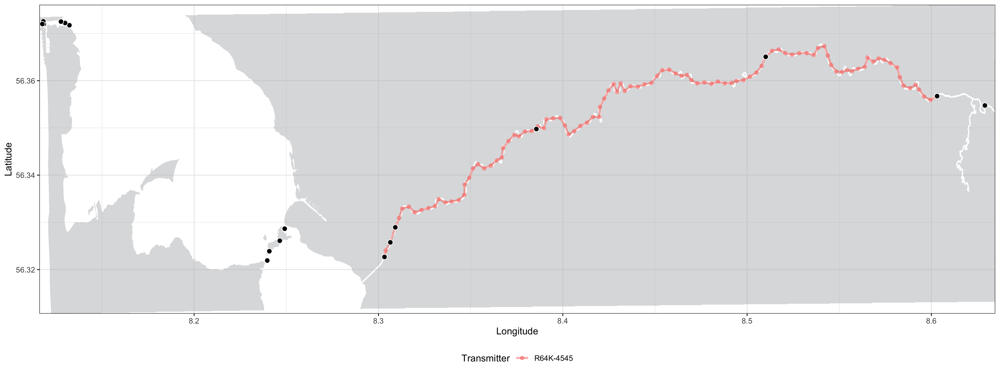

Refining the Shortest Paths (RSP) of animals tracked with acoustic transmitters in estuarine regions
Overview
The RSP toolkit is a method for analyzing the fine scale movements of aquatic animals tracked with passive acoustic telemetry in estuarine environments, that accounts for the surrounding land masses. The animal movements between detections are recreated to have occurred exclusively in water and the utilization distribution areas are limited by the land contours, providing realistic estimations of space use. The method can be divided into the following three main steps:
- Refining the shortest paths in water between consecutive acoustic detections
- Calculating utilization distribution areas using dynamic Brownian Bridge Movement Models (dBBMM)
- Calculating the overlaps between different biological groups monitored
Depending on the research questions being addressed, the utilization distribution areas can be calculated for the entire monitoring periods, or in fine-scale according to fixed temporal intervals in hours (timeframes). Tracked animals are assigned to specific biological groups (different species, different sexes from a same species, etc.) prior to analysis, and RSP can be used for calculating the amounts of inter-group overlap in space and time between all groups monitored. This approach allows spatial ecologists to use the outputs from such fine-scale space use models (areas of use, or the between-group overlaps) as input for further statistical analysis.
Here is an example of the same animal movements animated both using only the receiver locations and the receiver and RSP positions combined:

Main RSP functions
Running the analysis
runRSP()
Used to estimate the shortest in-water paths. Each animal monitored is analysed individually and all detections are assigned to separate tracks: a sequence of detections with intervals shorter than 24 hours (by default, max.time = 24). When the animal is not detected for a period of time longer than the maximum.time argument, a new track is created.
dynBBMM()
After the shortest in-water paths are estimated, the utilization distribution areas can be calculated with dynamic Brownian Bridge Movement Models (dBBMM). Models can be either calculated for the entire monitoring, or during a particular interval of interest.
getDistances()
Calculates the distances travelled (in meters) during each RSP track, both using only the receiver locations and also the exclusively in-water tracks.
getAreas()
Obtains the in-water areas (in squared meters) for the tracked animals, either at monitored group or track levels. The contour levels of interest from the dBBMMs can be set, and by default areas are calculated for the 50% and 95% contours.
getOverlaps()
Calculates the amounts of overlap among different biological groups monitored, at the same contour levels as defined in getAreas(). Overlaps are returned as only in space for group dBBMM, and if a timeframe is set (in hours), overlaps are simultaneously in space and time for timeslot dBBMM.
Plotting the results
plotTracks()
This function can be used to visualize the tracks created using runRSP():

plotContours()
Plots the dBBMM utilization distribution areas calculated for each animal using dynBBMM():

plotAreas()
This plot shows the space use areas from a particular group of animals:

plotOverlap()
This function shows where in the study area the overlaps between different biological groups occurred:

animateTracks()
This function can be used to create an animation of the RSP tracks:

Installation
Current version: 1.0.3
You will need the remotes package to install RSP:
install.packages("remotes")
library("remotes") Now you can install RSP using:
install_github("YuriNiella/RSP", build_opts = c("--no-resave-data", "--no-manual"), build_vignettes = TRUE)All the information you need on how to perform the RSP analysis can be found in the package vignettes:
browseVignettes("RSP")